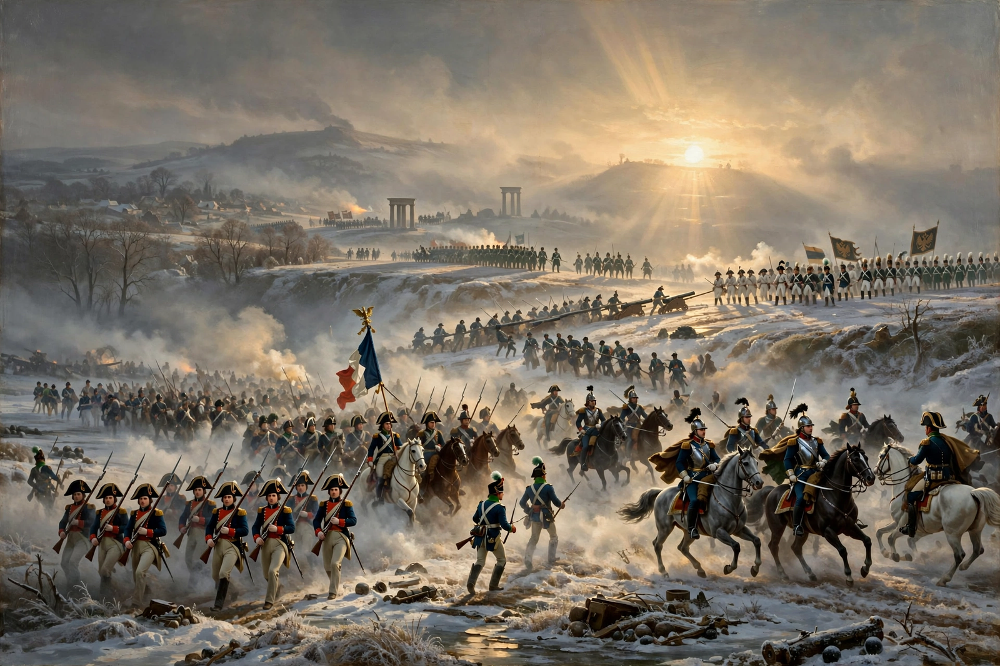

The War of the Third Coalition (1803–1806) was a European conflict in which France and its client states, led by Napoleon, defeated an alliance of the United Kingdom, Austria, Russia, Naples and Sweden known as the Third Coalition. The war is generally considered the first of the Napoleonic Wars proper, and its decisive campaign — the manoeuvres culminating in the encirclement at Ulm and the victory at Austerlitz — is regarded as Napoleon's masterpiece.
The land war in Central Europe ended with the Treaty of Pressburg in December 1805, which stripped Austria of territory and influence. Within a year Napoleon had organised the Confederation of the Rhine in place of the defunct Holy Roman Empire, and Prussia's challenge produced the War of the Fourth Coalition (1806–1807). At sea, Britain's victory at Trafalgar, where Admiral Nelson was killed, confirmed British naval supremacy for the rest of the wars.
| War of the Third Coalition | |
|---|---|
 | |
| Date | 1803/1805 – 1806 |
| Location | Central Europe, Italy, Atlantic Ocean, Mediterranean Sea, West Indies |
| Result | French victory — Treaty of Pressburg; dissolution of the Holy Roman Empire (1806); creation of the Confederation of the Rhine |
| Belligerents | France, Spain, and French client states (Batavian Republic, Kingdom of Italy, Etruria, Bavaria, Württemberg) — versus — Third Coalition: United Kingdom, Austrian Empire, Russian Empire, Naples, Sweden |
| Commanders | Napoleon I, André Masséna, Michel Ney, Joachim Murat — versus — Archduke Charles, Karl Mack von Leiberich, Mikhail Kutuzov, Alexander I of Russia, Horatio Nelson † |
The Peace of Amiens (1802) between Britain and France collapsed in May 1803 over the status of Malta and French expansion in Italy, Switzerland and the Netherlands. Britain declared war, and Napoleon assembled the Army of England at Boulogne for an invasion across the Channel while his fleet attempted to gain temporary command of the sea. Prime Minister William Pitt the Younger built the Third Coalition with subsidies to Austria and Russia, formalised in 1805: the allies planned converging offensives — an Austro-Russian advance in Germany and Italy, and Anglo-Russian landings in Hanover and at Naples — while the Royal Navy swept French and Spanish commerce from the seas.
The Austrian general Karl Mack advanced into Bavaria in September 1805 expecting Russian support, but Napoleon, abandoning the invasion of England, marched the newly named Grande Armée from the Channel coast to the Danube with extraordinary speed. In a sweeping wheel through southern Germany, French corps crossed the Danube behind Mack's army, cut his communications, and defeated his detachments in a series of actions (Wertingen, Haslach-Jungingen, Elchingen). Surrounded at Ulm, Mack capitulated on 20 October 1805 with some 25,000–30,000 men — one of the most complete encirclements of the era — while Napoleon lost only a few thousand. Vienna itself fell in November.
Meanwhile the combined Franco-Spanish fleet under Admiral Villeneuve, whose manoeuvres were meant to clear the Channel for invasion, was intercepted returning to Cadiz and brought to battle off Cape Trafalgar on 21 October 1805 — the day after Ulm. Nelson's two columns broke the allied line and captured or destroyed some 20 ships without losing one, though Nelson himself was shot by a French marksman and died during the action. Trafalgar ended any realistic prospect of a French invasion of Britain and anchored British sea power for a century.
Advancing into Moravia, Napoleon faced the combined Austro-Russian army under Kutuzov's nominal command, with Emperors Alexander I and Francis II present. Napoleon deliberately abandoned the strong Pratzen Heights and weakened his right wing to tempt the allies into an attack; on 2 December 1805, in fog and the famous low "Sun of Austerlitz", Soult's corps retook the heights and split the allied army, while the allied columns attacking the French right were enveloped and driven onto frozen ponds. Allied losses were roughly 36,000 killed, wounded and captured, against about 9,000 French.
Austria sued for peace. By the Treaty of Pressburg (26 December 1805) Austria ceded Venetia to the French Kingdom of Italy, Tyrol and other lands to Bavaria and Württemberg, paid a large indemnity, and recognised Napoleon's reorganisation of Germany and Italy. Russian forces withdrew eastward. In Italy, French forces overran Naples, whose Bourbon king fled to Sicily; Joseph Bonaparte was installed as king in 1806.
In the summer of 1806 Napoleon grouped sixteen German states into the Confederation of the Rhine under French protection; on 6 August 1806 Francis II abdicated the imperial crown and the Holy Roman Empire, after more than eight centuries, ceased to exist. Prussia, alarmed and humiliated, issued an ultimatum demanding French withdrawal east of the Rhine — and so brought on the next coalition war in October 1806. Britain, undefeated at sea but shut out of the Continent, answered Napoleon's dominance with the economic warfare that drew both sides toward the Continental System and the Orders in Council.